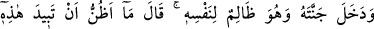
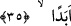
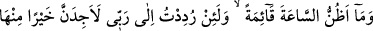
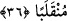

yorumlanırsa zikredilen iki adamın gerçek değil mukadder iki kardeş olmaları gerekir
Çünkü gerçekten kardeş olsalardı, geçen ifâdeden anlaşıldığı üzere birinin hiç malı
olmaması îcâb ederdi. Oysa buradaki ifâdeden kâfir kardeşin çok malı, mü’min olanın
ise az malı olduğu belirtiliyor. Bu îtirazın cevabı, onun malca zengin olandan istekte
bulunmasından anlaşılabilir. İşin hakîkatini en iyi Allah bilir.
35. (Böyle gurur ve kibirle) kendisine zulmederek bağına girdi. Şöyle dedi:
“Bunun, hiçbir zaman yok olacağını sanmam.”
Daha önce sözü edilen iki bahçenin sâhibi olan Kutrus, “(Böyle gurur ve kibirle)
kendisine zulmederek” arkadaşı ile birlikte onu gezdirmek ve ona övünmek için
“bağına girdi.”
Daha önce “cenneteyn (iki bağdan)”dan, burada ise bir “bağ”dan bahsedilmesi,
bahçelerden birinin diğerine bitişik olmasından ya da bahçelere teker teker
girildiğinden dolayıdır. Şeyh şöyle der: “Bağın tek olarak zikredilmesi, bir bahçe
murâd edildiği içindir.”
O kendisine zulmediyordu, çünkü malı ile gururlanarak, yaratılışı ve âhireti (mebde’
ve maâd) inkâr ederek kendisine zarar veriyordu. Bu ise zulmün en çirkinidir.
Sanki “O zaman o ne dedi?” denilmiş ve cevab olarak şöyle buyrulmuştur: “Şöyle
dedi: “Bunun,” bağın “hiçbir zaman yok olacağını sanmam.” Genelde zan, ilim
anlamında kullanılır. Çünkü zann-ı gâlib ilme yakındır. Âdetlerde ve hükümlerde ilim
yerine geçer.
Buradaki “
ebeden (hiçbir zaman)”dan maksad, uzun süredir. Bu da onun hayatı
müddetince demektir, yoksa ebediyyen öylece kalacağı anlamında değildir. Hiçbir akıllı
böyle bir zanda bulunmaz. Çünkü his ve tahmin, dünyanın hallerinin geçici olduğuna
delâlet eder. O tûl-i emeli, gaflete dalmış olması ve kendisine tanınan sürenin
uzunluğuna aldanması sebebiyle arkadaşının kendisine verdiği öğüde, bahçesinin fânî
oluşunu ve onunla aldanmamasını hatırlatmasına ve kalıcı olan sâlih amelleri yapmasını
emretmesine karşılık bu sözü söylemiştir.
36. “Kıyâmetin kopacağını da sanmıyorum. Şâyet Rabbimin huzuruna